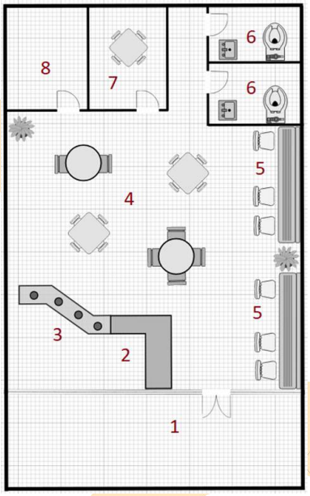

Ground floor layout
The ground floor handles arrival, ordering, and public seating. It places the entrance, service counter, open cafe tables, wall seating, restrooms, and support rooms together so first-time users can enter, order, sit, and move through the space with minimal confusion.